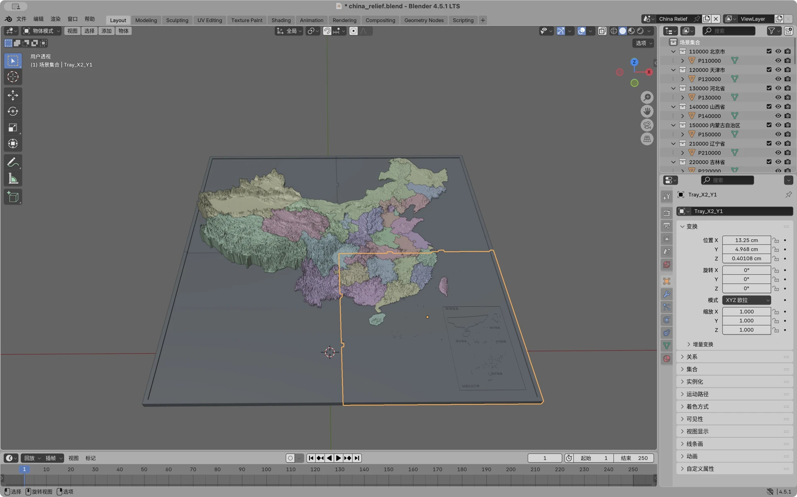

AGENT × MAKING01 / 06
XY 是轮廓。
Z 是真实海拔。
XY / FLAT OUTLINE
槽深 2 mm
南海诸岛
Z / HEIGHT× 1
X · Y → Z

BLENDER / 真实界面
南海诸岛 · 固定附图 470 × 470 mm / 四片底座
470 × 470 mm / 四片底座XYAlbers 投影
Z × 40统一放大高度
实体三角网格封底
原项目数据驱动动画 · XY 与 Z 比例不同 · 槽深 2 mm

BLENDER / 真实界面
南海诸岛 · 固定附图